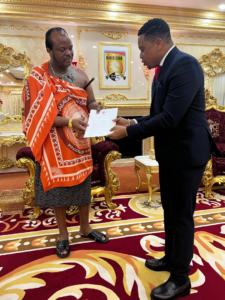
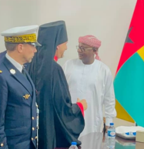

<?xml version="1.0" encoding="UTF-8"?><rss version="2.0"
	xmlns:content="http://purl.org/rss/1.0/modules/content/"
	xmlns:wfw="http://wellformedweb.org/CommentAPI/"
	xmlns:dc="http://purl.org/dc/elements/1.1/"
	xmlns:atom="http://www.w3.org/2005/Atom"
	xmlns:sy="http://purl.org/rss/1.0/modules/syndication/"
	xmlns:slash="http://purl.org/rss/1.0/modules/slash/"
	>

<channel>
	<title>Diplomatie &#8211; Sabourg</title>
	<atom:link href="../../../category/diplomatie/feed/" rel="self" type="application/rss+xml" />
	<link>https://www.sabourg.com</link>
	<description></description>
	<lastBuildDate>Fri, 19 Dec 2025 16:08:12 +0000</lastBuildDate>
	<language>fr-FR</language>
	<sy:updatePeriod>
	hourly	</sy:updatePeriod>
	<sy:updateFrequency>
	1	</sy:updateFrequency>
	<generator>https://wordpress.org/?v=6.9</generator>
	<item>
		<title>Reconnaissance de la souveraineté du Sabourg par le Cameroun</title>
		<link>../../../2025/11/07/reconnaissance-de-la-souverainete-du-sabourg-par-le-cameroun/</link>
		
		<dc:creator><![CDATA[admin]]></dc:creator>
		<pubDate>Fri, 07 Nov 2025 17:12:10 +0000</pubDate>
				<category><![CDATA[Diplomatie]]></category>
		<guid isPermaLink="false">../../../?p=1530</guid>

					<description><![CDATA[Le 27 octobre 2025, S.E. Paul Biya a été réélu à la présidence du Cameroun. Lors du journal télévisé de 4vision du 31 octobre à 20 heures, les lettres de félicitations du Sabourg et de trois autres États, l&#8217;Espagne, la Belgique et la Russie, ont été lues publiquement. Ce signe confirme encore davantage la crédibilité &#8230;]]></description>
										<content:encoded><![CDATA[<p>Le 27 octobre 2025, S.E. Paul Biya a été réélu à la présidence du Cameroun.<br />
Lors du journal télévisé de 4vision du 31 octobre à 20 heures,<br />
les lettres de félicitations du Sabourg et de trois autres États, l&rsquo;Espagne, la Belgique et la Russie, ont été lues publiquement.<br />
Ce signe confirme encore davantage la crédibilité du Sabourg en Afrique équatoriale, considéré<br />
par la République du Cameroun comme une souveraineté au même titre que l&rsquo;Espagne, la Belgique et la Russie.</p>
]]></content:encoded>
					
		
		
			</item>
		<item>
		<title>DE LA CHINE TECHNOLOGIE ET SPIRITUALITÉ</title>
		<link>../../../2025/06/06/de-la-chine-technologie-et-spiritualite/</link>
		
		<dc:creator><![CDATA[admin]]></dc:creator>
		<pubDate>Fri, 06 Jun 2025 16:31:05 +0000</pubDate>
				<category><![CDATA[Diplomatie]]></category>
		<guid isPermaLink="false">../../../?p=1379</guid>

					<description><![CDATA[Les missions à l&#8217;étranger du Prince-Abbé du Sabourg, Mgr Giovanni Luca, se poursuivent. Du 25 mai au 1er juin 2025, l&#8217;archevêque du Sabourg était en visite à Ningbo, en Chine, et dans les territoires voisins. La visite a été organisée par le ministère de l&#8217;Économie dirigé par S.E. Stefano Soddu, également présent, qui entretient depuis &#8230;]]></description>
										<content:encoded><![CDATA[<p>Les missions à l&rsquo;étranger du Prince-Abbé du Sabourg, Mgr Giovanni Luca, se poursuivent. Du 25 mai au 1er juin 2025, l&rsquo;archevêque du Sabourg était en visite à Ningbo, en Chine, et dans les territoires voisins. La visite a été organisée par le ministère de l&rsquo;Économie dirigé par S.E. Stefano Soddu, également présent, qui entretient depuis longtemps déjà des relations de coopération économique entre la Chine et le Sabourg, avec le concours de l&rsquo;actuel ministre chargé de la coopération asiatique, Renain Chen. Ningbo est le plus grand port commercial du monde, et le prince du Sabourg a été invité en tant qu&rsquo;invité d&rsquo;honneur représentant le Sabourg à la plus grande manifestation portuaire chinoise, le MPF 2025, Marittime Silk Road Port Cooperation Forum. L&rsquo;avocat Giuseppe Giacomini était présent à l&rsquo;événement pour la délégation italienne en tant que personne de référence pour la législation portuaire européenne.<br />
Les principaux dirigeants portuaires du monde entier, tant du secteur public que privé, ont participé au forum. Le Prince-Abbé du Sabourg a été rejoint par la présidente de la Fondation Lotus Suzhuang Huang. La mission de cette organisation opérant entre Los Angeles et Pékin est liée au développement de nouvelles technologies de blockchain. Cette rencontre confirme l&rsquo;intention des Chinois de coopérer avec le Sabourg, qui a signé ces derniers mois un contrat de coopération en prévision de la croissance de la Fondation numérique du Sabourg et du soutien promis aux pays africains rencontrés ces derniers mois.<br />
Le 29 mai, la délégation du Sabourg se rendra près de Ningbo, à Yiwu où l&rsquo;abbé du Sabourg a été accueilli par le professeur Xu Zhijian, ancien maire de la ville. Le prince a décerné la médaille du mérite pour la création du plus grand marché de produits B2B du continent asiatique, installé à Yiwu.<br />
La cérémonie d&rsquo;investiture s&rsquo;est déroulée dans le monastère bouddhiste de Shuang Lin, datant de 520 après J.-C., en présence de l&rsquo;abbé du monastère Hui Ji qui s&rsquo;est entretenu avec l&rsquo;archevêque du Sabourg.  L&rsquo;abbé du monastère oriental a répondu à l&rsquo;appel du religieux sabourgeois concernant l&rsquo;urgence d&rsquo;atteindre l&rsquo;unité entre les religions monothéistes et les religions orientales, dans cet esprit œcuménique annoncé par le pape Léon XIV et soutenu par l&rsquo;abbé de Sabourg. L&rsquo;abbé de Hui Ji a accepté la proposition de l&rsquo;abbé de Sabourg et Hui Ji se rendra bientôt à Sabourg pour convenir d&rsquo;un projet interreligieux en coopération avec l&rsquo;Institut œcuménique de Sabourg. Le voyage se termine dans la ville technologique de Hangzou pour d&rsquo;autres rencontres.</p>
<p>Il s&rsquo;agit donc d&rsquo;un voyage placé sous le signe de la spiritualité et de la technologie : la spiritualité enracinée dans le prieuré de Seborga et la technologie promue par le prieuré de San Michele à Vintimille. Nous vous tiendrons informés de l&rsquo;évolution de ces projets en Chine et d&rsquo;autres dans le monde par le biais de communiqués supplémentaires.</p>
<figure id="attachment_1402" aria-describedby="caption-attachment-1402" style="width: 340px" class="wp-caption aligncenter"><a href="../../../wp-content/uploads/2025/06/Immagine-WhatsApp-2025-06-06-ore-18.55.51_22d3f458-1.jpg"></a><figcaption id="caption-attachment-1402" class="wp-caption-text"> Détail du MPF</figcaption></figure>
<figure id="attachment_1386" aria-describedby="caption-attachment-1386" style="width: 521px" class="wp-caption aligncenter"><a href="../../../wp-content/uploads/2025/06/Immagine-WhatsApp-2025-06-04-ore-16.47.13_56f058de-1.jpg"></a><figcaption id="caption-attachment-1386" class="wp-caption-text">Délégation du Sabourg à Ningbo</figcaption></figure>
<figure id="attachment_1382" aria-describedby="caption-attachment-1382" style="width: 311px" class="wp-caption aligncenter"><a href="../../../wp-content/uploads/2025/06/Immagine-WhatsApp-2025-06-04-ore-16.47.13_48a42d00-1.jpg"></a><figcaption id="caption-attachment-1382" class="wp-caption-text">A destra dell’Arcivescovo del Sabourg, la presidente della Fondazione Lotus Suzhuang Huang.</figcaption></figure>
<figure id="attachment_1383" aria-describedby="caption-attachment-1383" style="width: 574px" class="wp-caption aligncenter"><figcaption id="caption-attachment-1383" class="wp-caption-text">L&rsquo;abbé du Sabourg lors de sa rencontre avec l&rsquo;abbé Hui Ji</figcaption></figure>
<figure id="attachment_1384" aria-describedby="caption-attachment-1384" style="width: 580px" class="wp-caption aligncenter"><a href="../../../wp-content/uploads/2025/06/Immagine-WhatsApp-2025-06-04-ore-16.47.13_93ad44db-1.jpg"></a><figcaption id="caption-attachment-1384" class="wp-caption-text">Photo de groupe : S.E. Poddu, l&rsquo;abbé du Sabourg, l&rsquo;abbé Hui Ji et l&rsquo;ancien maire de Yiwu, le professeur Xu Zhijian, avec la médaille du Mérite.</figcaption></figure>
<figure id="attachment_1381" aria-describedby="caption-attachment-1381" style="width: 571px" class="wp-caption aligncenter"><a href="../../../wp-content/uploads/2025/06/Immagine-WhatsApp-2025-06-04-ore-17.07.22_60546f6e-1.jpg"></a><figcaption id="caption-attachment-1381" class="wp-caption-text">Vue du marché B2B de Yiwu</figcaption></figure>
<p>&nbsp;</p>
]]></content:encoded>
					
		
		
			</item>
		<item>
		<title>CONSENTEMENT DES ÉTATS D&#8217;AFRIQUE CENTRALE À SABOURG</title>
		<link>../../../2025/05/21/consentement-des-etats-dafrique-centrale-a-sabourg/</link>
		
		<dc:creator><![CDATA[admin]]></dc:creator>
		<pubDate>Wed, 21 May 2025 14:00:04 +0000</pubDate>
				<category><![CDATA[Diplomatie]]></category>
		<category><![CDATA[News]]></category>
		<guid isPermaLink="false">../../../?p=1352</guid>

					<description><![CDATA[Le Prince Abbé de Sabourg a assisté à la cérémonie d&#8217;investiture du nouveau Président du Gabon, Brice Clotaire Oligui Nguema, le 3 mai 2025. La présence du Prince de Sabourg à la cérémonie confirme que l&#8217;activité diplomatique de Sabourg dans les territoires centrafricains a non seulement fait consensus mais est désormais consolidée et nous attendons &#8230;]]></description>
										<content:encoded><![CDATA[<p>Le Prince Abbé de Sabourg a assisté à la cérémonie d&rsquo;investiture du nouveau Président du Gabon, Brice Clotaire Oligui Nguema, le 3 mai 2025.<br />
La présence du Prince de Sabourg à la cérémonie confirme que l&rsquo;activité diplomatique de Sabourg dans les territoires centrafricains a non seulement fait consensus mais est désormais consolidée et nous attendons de nouveaux développements dans les mois à venir.<br />
Les photos liées à cet article montrent les innombrables personnalités institutionnelles de haut niveau que le Prince de Sabourg a rencontrées lors de ce voyage institutionnel au Gabon, au premier rang desquelles les présidents africains présents dans la Salle Présidentielle du Gabon.<br />
Les propos de l&rsquo;archevêque de Sabourg concernant la rencontre sont plus que positifs : « <em>Les perspectives de coopération avec les États d&rsquo;Afrique centrale sont excellentes et reposent sur des intérêts communs. Leurs dirigeants ont ainsi manifesté un intérêt et un engagement considérables pour la reconnaissance internationale de Sabourg comme État souverain, adoptant le modèle de développement proposé par Sabourg. Malheureusement, les États africains sont accablés par des dettes accumulées auprès des institutions monétaires internationales. Le projet Sabourg envisage une autonomie progressive des États grâce à une conversion intelligente de leurs ressources naturelles en ressources économiques réinvesties dans des travaux publics, sans endettement supplémentaire. Et cela se fera grâce à la collaboration d&rsquo;entreprises italiennes et européennes au savoir-faire éprouvé qui mettront en œuvre le modèle de développement de Sabourg sur leurs territoires. »</em><br />
Le Prince-Abbé de Sabourg a également rencontré la Première Dame du Gabon Zita Oligui Nguema à la Fondation Ma Bannière qu&rsquo;elle dirige.</p>
<figure id="attachment_1353" aria-describedby="caption-attachment-1353" style="width: 1024px" class="wp-caption aligncenter"><figcaption id="caption-attachment-1353" class="wp-caption-text">Président de la République du TCHAD S.E. Mahamat Déby Itno</figcaption></figure>
<figure id="attachment_1354" aria-describedby="caption-attachment-1354" style="width: 1024px" class="wp-caption aligncenter"><figcaption id="caption-attachment-1354" class="wp-caption-text">Président de la République de Guinée-Bissau S.E. Umaro Sissoco Embaló</figcaption></figure>
<figure id="attachment_1355" aria-describedby="caption-attachment-1355" style="width: 1024px" class="wp-caption aligncenter"><figcaption id="caption-attachment-1355" class="wp-caption-text">Président de la République de Sao Tomé et Principe, S.E. Carlos Vila Nova</figcaption></figure>
<figure id="attachment_1356" aria-describedby="caption-attachment-1356" style="width: 1024px" class="wp-caption aligncenter"><figcaption id="caption-attachment-1356" class="wp-caption-text">Président de la République de Guinée équatoriale S.E. Teodoro Obiang Nguema Mbasogo</figcaption></figure>
<figure id="attachment_1357" aria-describedby="caption-attachment-1357" style="width: 1024px" class="wp-caption aligncenter"><figcaption id="caption-attachment-1357" class="wp-caption-text">Presidente della Repubblica del Ghana S.E. Nana Akufo-Addo</figcaption></figure>
]]></content:encoded>
					
		
		
			</item>
		<item>
		<title>À LÉON XIV : « Le Saint-Esprit inspira le premier appel au peuple »</title>
		<link>../../../2025/05/20/a-leon-xiv-le-saint-esprit-inspira-le-premier-appel-au-peuple/</link>
		
		<dc:creator><![CDATA[admin]]></dc:creator>
		<pubDate>Tue, 20 May 2025 13:55:46 +0000</pubDate>
				<category><![CDATA[Diplomatie]]></category>
		<guid isPermaLink="false">../../../?p=1338</guid>

					<description><![CDATA[Ces derniers jours, le prince abbé de Sabourg, Jean Luc, a adressé une lettre au nouveau pape Léon XIV au nom de la Principauté et de tous les citoyens religieux et laïcs de Sabourg. Il ressort de la teneur de la lettre l&#8217;estime et la confiance que l&#8217;archevêque de Sabourg porte au pape Léon XIV. &#8230;]]></description>
										<content:encoded><![CDATA[<p>Ces derniers jours, le prince abbé de Sabourg, Jean Luc, a adressé une lettre au nouveau pape Léon XIV au nom de la Principauté et de tous les citoyens religieux et laïcs de Sabourg.<br />
Il ressort de la teneur de la lettre l&rsquo;estime et la confiance que l&rsquo;archevêque de Sabourg porte au pape Léon XIV.<br />
Les mots sont précis et sans équivoque : <em>« Votre premier discours, auquel nous avons assisté avec beaucoup d’intérêt et d’admiration, a prouvé que le Saint-Esprit a inspiré le premier appel au peuple déclarant l’urgence d’agir pour la paix dans le monde. »</em><br />
En outre, dans le document, le Prince indique l&rsquo;analogie entre les armoiries cardinalices de Léon XIV et les armoiries de l&rsquo;Ordre monastique de Sabourg : <em>« Ce n’est pas un hasard si ses armoiries de cardinal, en bleu et blanc, représentent un signe indubitable d’union avec les armoiries de la Principauté de Sabourg, premier état monastique de l&rsquo;humanité. »</em><br />
La lettre se termine par la volonté du Prince-Abbé de collaborer activement avec la Sainte Église romaine et toutes les institutions principales parties impliquées dans les processus de paix, pour accomplir ces paroles prophétisées dans le Saint Évangile de Jean enfermé dans la phrase : <strong>« Ut Unum Sint »</strong>, paraphrase de <strong>« In Illo Uno Unum »</strong>, cité dans les armoiries du nouveau pape.<br />
On pourrait donc prévoir, dans le futur, une rencontre entre le pape Léon XIV et l&rsquo;archevêque de Sabourg au sujet de la paix mondiale.</p>
]]></content:encoded>
					
		
		
			</item>
		<item>
		<title>Le Prince-Abbé Giovanni Luca présent à la cérémonie d&#8217;investiture du nouveau Président élu du Gabon Brice Clotaire Oligui Nguema.</title>
		<link>../../../2025/05/06/le-prince-abbe-giovanni-luca-present-a-la-ceremonie-dinvestiture-du-nouveau-president-elu-du-gabon-brice-clotaire-oligui-nguema/</link>
		
		<dc:creator><![CDATA[admin]]></dc:creator>
		<pubDate>Tue, 06 May 2025 10:07:02 +0000</pubDate>
				<category><![CDATA[Diplomatie]]></category>
		<guid isPermaLink="false">../../../?p=1320</guid>

					<description><![CDATA[Le Prince-Abbé Giovanni Luca présent à la cérémonie d&#8217;investiture du nouveau Président élu du Gabon Brice Clotaire Oligui Nguema. Une cérémonie empreinte de solennité et de symbolisme, le nouveau Président de la République Gabonaise, a prêté serment devant les plus hautes autorités du pays, une délégation du peuple gabonais et plusieurs chefs d’État africains venus &#8230;]]></description>
										<content:encoded><![CDATA[<div data-olk-copy-source="MessageBody">Le Prince-Abbé Giovanni Luca présent à la cérémonie d&rsquo;investiture du nouveau Président élu du Gabon Brice Clotaire Oligui Nguema.</div>
<div dir="auto"></div>
<div dir="auto">Une cérémonie empreinte de solennité et de symbolisme, le nouveau Président de la République Gabonaise, a prêté serment devant les plus hautes autorités du pays, une délégation du peuple gabonais et plusieurs chefs d’État africains venus témoigner leur soutien.</div>
<div dir="auto"></div>
<div dir="auto">Le Président Brice Clotaire Oligui Nguema a juré de respecter et de faire respecter la Constitution, de préserver l’unité nationale, et de travailler sans relâche pour la paix, la justice et le développement du Gabon .Il a tendu la main à toutes les forces vives de la nation. Il a appelé à « une ère nouvelle de responsabilité, de transparence et de reconstruction collective », tout en insistant sur la nécessité de renforcer l’intégration régionale et la coopération africaine.</div>
<div dir="auto"></div>
<div dir="auto">Le Prince-Abbé de la principauté du Sabourg qui est en tournée africaine avec une forte délégation dans le cadre de la coopération Sud-Sud.</div>
<div dir="auto"></div>
<div dir="auto"></div>
<div dir="auto"></div>
]]></content:encoded>
					
		
		
			</item>
		<item>
		<title>PAPA FRANCIS A LAISSE UN SIGNE INDELIBLE DE PAIX, DE JUSTICE ET DE MISERICORDIE</title>
		<link>../../../2025/04/22/papa-francis-a-laisse-un-signe-indelible-de-paix-de-justice-et-de-misericordie/</link>
		
		<dc:creator><![CDATA[admin]]></dc:creator>
		<pubDate>Tue, 22 Apr 2025 16:09:16 +0000</pubDate>
				<category><![CDATA[Diplomatie]]></category>
		<guid isPermaLink="false">../../../?p=1309</guid>

					<description><![CDATA[À son très révérendissime Éminence le Cardinal Pietro Parolin, Secrétaire d’État Cité du Vatican Saint-Siège Au lendemain de la commémoration de la Résurrection de Notre Seigneur, c’est avec une profonde tristesse et un grand respect que nous apprenons la nouvelle du décès de Sa Sainteté le Pape François, un homme d’une grande foi, d’une grande &#8230;]]></description>
										<content:encoded><![CDATA[<p>À son très révérendissime Éminence le Cardinal Pietro Parolin, Secrétaire d’État<br />
Cité du Vatican<br />
Saint-Siège</p>
<p>Au lendemain de la commémoration de la Résurrection de Notre Seigneur, c’est avec une profonde tristesse et un grand respect que nous apprenons la nouvelle du décès de Sa Sainteté le Pape François, un homme d’une grande foi, d’une grande compassion et d’un grand dévouement.<br />
Au nom du peuple de Sabourg et du clergé de l’Ordre monastique de Sabourg, nous exprimons nos plus sincères condoléances au Saint-Siège, aux membres du clergé et à tous les fidèles de l’Église catholique romaine.<br />
Le pape François a laissé une marque indélébile dans l’histoire de l’Église, transmettant un message de paix, de justice et de miséricorde avec courage et amour. Sa vie de service et sa capacité à unir les personnes de différentes confessions sont un exemple éclatant d’humanité et d’espoir.<br />
Le clergé de Sabourg s’associe dans la prière au clergé de l’Église catholique romaine et à tous ceux qui ont trouvé un guide spirituel en la personne du pape François. Que son âme trouve la paix dans le repos éternel et que son héritage continue d’inspirer les gens à vivre avec amour et compassion pour leur prochain.</p>
<p>Avec mon affection fraternelle et ma haute considération,</p>
<p>Monseigneur Giovanni Luca du Sabourg</p>
<p></p>
]]></content:encoded>
					
		
		
			</item>
		<item>
		<title>LE PRINCE ABBE DE SABOURG REÇU OFFICIELLEMENT PAR LE PREMIER MINISTRE DE GUINEE CONAKRY</title>
		<link>../../../2025/01/22/le-prince-abbe-de-sabourg-recu-officiellement-par-le-premier-ministre-de-guinee-conakry/</link>
		
		<dc:creator><![CDATA[admin]]></dc:creator>
		<pubDate>Wed, 22 Jan 2025 08:53:35 +0000</pubDate>
				<category><![CDATA[Diplomatie]]></category>
		<guid isPermaLink="false">../../../?p=1095</guid>

					<description><![CDATA[Conakry 22 janvier 2025 Le 22 janvier, le Pricipe-Abbé de Sabourg Giovanni Luca a été reçu officiellement par S.E. Amadou Oury BAH Premier Ministre Chef du Gouvernement de Guinée Conakry.L’objectif de la rencontre était d’établir des relations officielles entre les deux Etats sur différents plans afin de mettre en place une coopération internationale bilatérale. Le &#8230;]]></description>
										<content:encoded><![CDATA[
<div class="wpb_text_column wpb_content_element ">
<div class="wpb_wrapper">
<h6>Conakry 22 janvier 2025</h6>
</div>
</div>
<p>Le 22 janvier, le Pricipe-Abbé de Sabourg Giovanni Luca a été reçu officiellement par S.E. Amadou Oury BAH Premier Ministre Chef du Gouvernement de Guinée Conakry.<br />L’objectif de la rencontre était d’établir des relations officielles entre les deux Etats sur différents plans afin de mettre en place une coopération internationale bilatérale.</p>


<p>Le Prince-Abate a exprimé sa gratitude au Premier Ministre S.E. Amadou Oury BAH pour l’importante réunion qui s’est déroulée à Conakry :<strong> « Il y a eu une forte compréhension de part et d’autre, ce qui permettra certainement de mettre en place des projets synergiques et pertinents avec la Guinée, avec le soutien de la Principauté de Sabourg ».</strong></p>


<p>Ensuite, le Prince de Sabourg a été reçu par le Directeur de Cabinet du Premier Ministre, le Ministre Mohamed Lamine Sy Savanè. Puis par le Ministre de l’Urbanisme et de l’Aménagement du Territoire Mory Conde et enfin il a rencontré le Ministre du Plan et de la Coopération Internationale M. Ismael Nabe.</p>


<p>Le Premier Ministre a été décoré Grand Officier de l’Ordre de la Couronne par le Prince Jean Luc et les Ministres précités décorés avec le grade de Chevalier.</p>


<p>Le Prince-Abbé a rendu une visite de courtoisie à l’Archevêque de l’Archidiocèse de Conakry S.E. Mgr. Vincent Coulibaly puis à la Grande Mosquée de Conakry pour être reçu par le Conseil des Imams qui a remis au Prince de Sabourg le Coran en signe de fraternité religieuse.</p>


<p>La mission officielle en Guinée Conakry s’est achevée par une visite officielle au Président du Conseil National de Transition S.E. Dr. Dansa Kouoma et à ses conseillers.<br />Le Président du CNT a remis au Prince-Abate un exemplaire de la Constitution du CNT, qui sera adoptée prochainement.<br />Le souverain de Sabourg a déclaré : <strong>« C’est un grand privilège qui confirme la vision futuriste qui place la Principauté de Sabourg comme un partenaire stratégique pour le développement économique, la coopération internationale et l’interaction religieuse sur le continent africain.</strong></p>
<p></p>
<figure id="attachment_1103" aria-describedby="caption-attachment-1103" style="width: 300px" class="wp-caption aligncenter"><figcaption id="caption-attachment-1103" class="wp-caption-text">Visite au Premier Ministre à Conakry</figcaption></figure>
<p></p>
<p></p>
<figure id="attachment_1106" aria-describedby="caption-attachment-1106" style="width: 300px" class="wp-caption aligncenter"><figcaption id="caption-attachment-1106" class="wp-caption-text">Décoration du Premier Ministre S.E. Amadou Oury BAH et de ses Ministres</figcaption></figure>
<figure id="attachment_1109" aria-describedby="caption-attachment-1109" style="width: 300px" class="wp-caption aligncenter"><figcaption id="caption-attachment-1109" class="wp-caption-text">Visite à l’Archevêque S.E. Mgr Vincent Coulibaly</figcaption></figure>
<figure id="attachment_1113" aria-describedby="caption-attachment-1113" style="width: 300px" class="wp-caption aligncenter"><figcaption id="caption-attachment-1113" class="wp-caption-text">Visite de la Grande Mosquée avec le Coran offert</figcaption></figure>
]]></content:encoded>
					
		
		
			</item>
		<item>
		<title>LE PRINCE ABBÉ DE SABOURG INVITÉ D’HONNEUR À L’INVESTITURE OFFICIELLE DU PRÉSIDENT DE LA RÉPUBLIQUE DU MOZAMBIQUE</title>
		<link>../../../2025/01/15/le-prince-abbe-de-sabourg-invite-dhonneur-a-linvestiture-officielle-du-president-de-la-republique-du-mozambique/</link>
		
		<dc:creator><![CDATA[admin]]></dc:creator>
		<pubDate>Wed, 15 Jan 2025 09:13:15 +0000</pubDate>
				<category><![CDATA[Diplomatie]]></category>
		<guid isPermaLink="false">../../../?p=1117</guid>

					<description><![CDATA[Le Prince de Sabourg Giovanni Luca a assisté le 15 janvier 2025, à l’invitation des autorités mozambicaines, à l’investiture du Président de la République du Mozambique S.E. Daniel Chapo. Parmi les invités d’honneur figuraient le Président de l’Afrique du Sud, S.E. Cyril Ramaphosa, le Président de la Guinée Bissau, S.E. Umaro Sissoo Embalo, ainsi que &#8230;]]></description>
										<content:encoded><![CDATA[<div class="wpb_text_column wpb_content_element ">
<div class="wpb_wrapper">
<h6><span style="font-weight: 400;">Le Prince de Sabourg Giovanni Luca a assisté le 15 janvier 2025, à l’invitation des autorités mozambicaines, à l’investiture du Président de la République du Mozambique S.E. Daniel Chapo. Parmi les invités d’honneur figuraient le Président de l’Afrique du Sud, S.E. Cyril Ramaphosa, le Président de la Guinée Bissau, S.E. Umaro Sissoo Embalo, ainsi que d’autres personnalités et institutions politiques et diplomatiques étrangères, notamment : S.E. Fortune Z. Charumbira, Président du Parlement de l’Union Africaine Ministre des Affaires Etrangères du Portugal, Paulo Rangel (photo à gauche du Prince-Abate) Dammu Ravi, Secrétaire des Relations Economiques du Ministère des Affaires Etrangères de l’Inde (à droite du Prince-Abate).</span></h6>
</div>
</div>
<div class="wpb_text_column wpb_content_element ">
<div class="wpb_wrapper">
<p>La déclaration du Prince-Abate en faveur du nouveau président à la fin de la cérémonie à Maputo : « S.E. Daniel Chapo est un réformateur qui s’oriente vers une rationalisation bureaucratique cohérente pour lutter contre la corruption, donner à son peuple de la dignité et un avenir, tant sur le plan humain que technologique ».</p>
<p></p>
<p></p>
<p><iframe loading="lazy" title="Toma de Posse: Filipe Nyusi faz último discurso como Presidente da República de Moçambique" width="1220" height="686" src="https://www.youtube.com/embed/sVi8OOqi0ZA?feature=oembed" frameborder="0" allow="accelerometer; autoplay; clipboard-write; encrypted-media; gyroscope; picture-in-picture; web-share" referrerpolicy="strict-origin-when-cross-origin" allowfullscreen></iframe></p>
</div>
</div>
]]></content:encoded>
					
		
		
			</item>
		<item>
		<title>LE PRINCE-ABBÉ DE SABOURG REÇU EN TANT QUE CHEF D’ÉTAT EN AFRIQUE</title>
		<link>../../../2024/12/13/le-prince-abbe-de-sabourg-recu-en-tant-que-chef-detat-en-afrique/</link>
		
		<dc:creator><![CDATA[admin]]></dc:creator>
		<pubDate>Fri, 13 Dec 2024 09:31:31 +0000</pubDate>
				<category><![CDATA[Diplomatie]]></category>
		<guid isPermaLink="false">../../../?p=1119</guid>

					<description><![CDATA[La nouvelle a été communiquée par Son Altesse Révérendissime Mgr Giovanni Luca, Prince-Abbé Archevêque de Sabourg, (né Mgr. Gianluca de Lucia) lors de la conférence publique qui s’est tenue le vendredi 13 décembre à Vintimille à l’occasion de la Fête Nationale de Sabourg, intitulée : « La Principauté de Sabourg en 2024, une souveraineté reconnue &#8230;]]></description>
										<content:encoded><![CDATA[<div class="wpb_text_column wpb_content_element ">
<div class="wpb_wrapper">
<p>La nouvelle a été communiquée par Son Altesse Révérendissime Mgr Giovanni Luca, Prince-Abbé Archevêque de Sabourg, (né Mgr. Gianluca de Lucia) lors de la conférence publique qui s’est tenue le vendredi 13 décembre à Vintimille à l’occasion de la Fête Nationale de Sabourg, intitulée : « La Principauté de Sabourg en 2024, une souveraineté reconnue dans le monde entier ».</p>
<p>Voici les principales déclarations du Prince-Abbé : « 2024 s’avère être une année décisive pour le destin de cet ancien État abbatial. La Guinée Bissau, le Liberia, le Royaume d’Eswatini (Swaziland) et la République Centrafricaine ont pris des contacts officiels avec le gouvernement de Sabourg, en vue de la signature d’un contrat de coopération internationale. Suite à un travail diplomatique incessant, au cours des derniers mois, j’ai été reçu en tant que chef d’État par ces hautes personnalités institutionnelles : le Chef du Gouvernement de Guinée Bissau, le Ministre d’État du Liberia, le Monarque du Swaziland. Les diplomates du Sabourg ont été reçus par le Chef d’État de la République Centrafricaine. Le premier contrat de coopération a été signé à Bissau le 13 septembre 2024 pour mettre en place une série de projets de développement sérieux et cruciaux pour l’avenir de ce pays en voie de développement. Des négociations sont en cours pour formaliser d’autres contrats de coopération internationale ; dès qu’ils seront conclus, nous vous en informerons. Sabourg, qui a récemment commencé un recensement général, n’est pas seulement une réalité existante dans les Prieurés situés à Seborga et à Vintimille, mais elle devient également active dans les activités diplomatiques avec d’autres nations afin de soutenir les pays en voie de développement avec des projets concrets.</p>
<p>En tant qu’État religieux franco-italien, la Principauté souhaite renforcer les relations de coopération transfrontalière entre l’Italie et la France, puisque le territoire de la commune de Sospel (France) faisait partie intégrante de l’ancienne Principauté du Sabourg. Je crois que le moment est venu de rendre publiques nos activités diplomatiques et gouvernementales. Les citoyens italiens, français et européens doivent savoir qu’il existe la Principauté du Sabourg, premier Etat abbatial de l’humanité, légitimement reconstituée il y a cinq ans par une congrégation religieuse d’inspiration bénédictine appelée « Ordre Monastique de Seborga » incardiné dans une organisation cultuelle monégasque.</p>
<p>Notre réalité gouvernementale, snobée par les médias, est souvent confondue avec une association locale de promotion touristique dénommée « Principauté de Seborga », dirigée par une citoyenne allemande, assisté d’un groupe de citoyens italiens. Notre intention est de préciser que cette association basée à Seborga n’a rien à voir avec la Principauté du Sabourg.<br />
Le fondateur de cette initiative louable à des fins touristiques est reconnu par une plaque commémorative comme le créateur de réalités passées, paraphrasant des mythes et des légendes qui n’ont rien à voir avec l’origine de la Principauté du Sabourg, qui a été fondée en 1261 par la volonté papale et non impériale.</p>
<p>Le Prince-Abbé du Sabourg a de nouveau évoqué le caractère international de l’État : la Principauté veut aujourd’hui devenir une vaste communauté spirituelle, attentive à l’intégration interreligieuse, afin d’étendre son action de création de communautés spirituelles en dehors de ses frontières territoriales, en tant que modèle de vie tertiaire dans le plus grand respect des ressources naturelles, de la protection de l’homme et de l’attention portée au développement technologique et numérique.</p>
<p>En conclusion, le Prince-Abbé a tenu à rassurer l’assistance sur sa volonté d’établir de bonnes relations avec la République Italienne : « Notre idée à partir de 2019 est d’obtenir une autonomie des territoires qui ont fait l’objet d’un protectorat établi par le Pontife romain aux Savoie depuis plus de trois siècles, dont nous comprenons qu’il n’a jamais été révoqué. Nous ne souhaitons pas entrer en conflit avec le Gouvernement Italien sur les raisons de notre existence, mais exposer le potentiel de la Pronci du Sabourg et promouvoir un accord de coopération par lequel la principauté se voit accorder une autonomie spéciale des territoires soumis au protectorat, exercé par la République italienne depuis 1946. En effet, la Principauté du Sabourg souhaite partager son autonomie avec le peuple italien afin de créer des avantages pour les deux parties.Qu’il soit bien clair pour tout le monde que je parle d’autonomie et non d’indépendance, car l’indépendance est un concept qui a été supplanté par la mise en place d’institutions regroupant plusieurs États, comme la Communauté Européenne.<br />
Je lance une invitation à tous ceux qui ne connaissent pas encore Sabourg : « il faut souligner que nous ne sommes pas une invention touristique et que nous ne voulons pas non plus impliquer les gens dans des projets géopolitiques improbables.<br />
Le temps des utopies et des fêtes de village est révolu.<br />
Nous avons prouvé que Sabourg existe en 2024 comme en 1261. Suivez nos actions de gouvernance en visitant régulièrement notre site internet : seborga.org.</p>
<p><figure id="attachment_1122" aria-describedby="caption-attachment-1122" style="width: 1024px" class="wp-caption aligncenter"><figcaption id="caption-attachment-1122" class="wp-caption-text">Prince-Abate invité d&rsquo;honneur du Forum international de développement économique en présence de tous les hauts responsables gouvernementaux</figcaption></figure></p>
<div class="wpb_text_column wpb_content_element ">
<div class="wpb_wrapper">
<p style="text-align: center;"><strong>Rome 15 octobre 2024</strong></p>
</div>
</div>
<p><figure id="attachment_1127" aria-describedby="caption-attachment-1127" style="width: 225px" class="wp-caption aligncenter"><figcaption id="caption-attachment-1127" class="wp-caption-text">Rencontre officielle le 15 octobre 2024 avec Sa Majesté Maswati III à Rome à l’occasion de la réunion annuelle de la FAO après la réception officielle à Mbabane de notre Ambassadeur plénipotentiaire auprès de la Couronne S.E. Lucien Kouassi Kouad.</figcaption></figure></p>
<p style="text-align: center;"><strong>MBABANE 26 septembre 2024<br />
</strong></p>
<p><figure id="attachment_1128" aria-describedby="caption-attachment-1128" style="width: 225px" class="wp-caption aligncenter"><figcaption id="caption-attachment-1128" class="wp-caption-text">Royayme d’Eswatini de S.E. Lucien Kouassi Kouadio, Ambassadeur Plénipotentiaires avec remise de la lettre de créance à Sa Majesté Maswati III</figcaption></figure></p>
<div class="wpb_text_column wpb_content_element ">
<div class="wpb_wrapper">
<p style="text-align: center;"><strong>LIBERIA 15 septembre 2024</strong></p>
</div>
</div>
<p><figure id="attachment_1126" aria-describedby="caption-attachment-1126" style="width: 300px" class="wp-caption aligncenter"><figcaption id="caption-attachment-1126" class="wp-caption-text">Réception officielle à l’aéroport de Monrovia par le Ministre d’Etat du Libéria, S.E. Mme Mamaka Bility et le Conseiller spécial délégué par le Président de la République, S.E. Sheikh A. Kouyateh. en présence du Directeur de l’Agence de Développement Economique du Sabourg, S.E. Claudio Genovese et du Conseiller Diplomatique Boubacar Oumar Ba.</figcaption></figure></p>
<div class="wpb_text_column wpb_content_element ">
<div class="wpb_wrapper">
<p style="text-align: center;"><strong>GUINEA BISSAU 9-13 septembre 2024</strong></p>
</div>
</div>
<p><figure id="attachment_1125" aria-describedby="caption-attachment-1125" style="width: 289px" class="wp-caption aligncenter"><figcaption id="caption-attachment-1125" class="wp-caption-text">Rencontre officielle avec le Président de la République, S.E. Umaro Sissoco Embalò</figcaption></figure></p>
<p><figure id="attachment_1129" aria-describedby="caption-attachment-1129" style="width: 300px" class="wp-caption aligncenter"><figcaption id="caption-attachment-1129" class="wp-caption-text">Réception officielle par le délégué du gouvernement S.E. Aristides Ocante Da Silva, ministre de l’administration territoriale</figcaption></figure></p>
<p><figure id="attachment_1124" aria-describedby="caption-attachment-1124" style="width: 300px" class="wp-caption aligncenter"><figcaption id="caption-attachment-1124" class="wp-caption-text">Réception officielle et décoration par le Premier ministre S.E. Rui Duarte Barros</figcaption></figure></p>
<p><figure id="attachment_1123" aria-describedby="caption-attachment-1123" style="width: 300px" class="wp-caption aligncenter"><figcaption id="caption-attachment-1123" class="wp-caption-text">Réception et décoration par le Ministre du Tourisme, S.E. Alberto Demba Turé</figcaption></figure></p>
</div>
</div>
]]></content:encoded>
					
		
		
			</item>
	</channel>
</rss>
